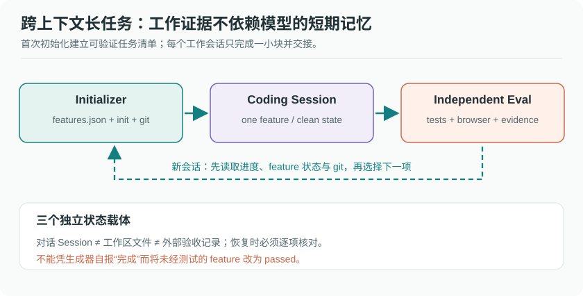
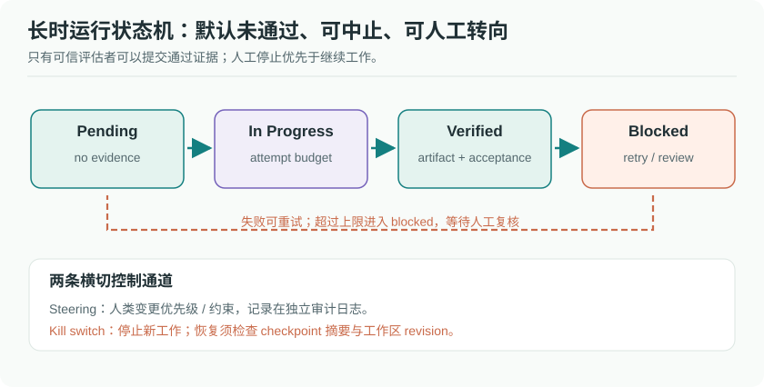

Long-Running Agents：跨会话交接、独立验收与安全中止
把漫长的软件开发拆成可恢复的 feature 增量；清楚区分会话历史、工作区状态与独立验收证据，让取消、Steering 和恢复都不依赖模型自报。
为什么单次对话不能承担一整个软件项目
一个修复 bug 的任务可能只需几分钟；完整应用开发则可能跨越几十次模型请求、多个开发会话、环境重启甚至部署故障。大模型在单次上下文中能保持一定连续性，但上下文窗口有限；一旦在中途重置或新开会话，模型不应该靠猜测恢复上一次工作的真实状态。
核心的工程问题不是让模型“永远运行”，而是把工作拆成可交付、可恢复且可验收的单元。初始化、执行、验收、交接的每个边界都需要有文件与操作证据，而不只依赖会话摘要。

两项公开研究分别验证了什么
Anthropic 2025 年 11 月的 Effective harnesses for long-running agents 将初始化会话与后续 coding 会话分开。第一阶段建立环境启动脚本、进度记录和 feature list，后续每轮只实现一项小功能，随后做测试、提交并留下下一轮能复用的记录。其 feature list 初始状态为 passes: false，防止系统在未验证时错误宣布完成。
2026 年 3 月的 Harness design for long-running application development 报告了 Planner、Generator、Evaluator 三角色架构：Planner 将短需求扩展为产品规格；Generator 按契约实现；Evaluator 通过浏览器与测试检查实际产物。角色分工是这项研究中的 Harness 设计，不代表 Claude Code 每次运行都自动启动三个代理。
这篇研究还明确区分了两代长任务策略：早期针对 Sonnet 4.5 的方案使用 context reset（结束旧上下文、交接后启动新会话）；后续更强模型的实验可以在同一会话持续运行，并由 SDK 自动 compaction 压缩历史。Reset 会改变会话边界，Compaction 则在同一会话内整理上下文，二者不是同一个操作，也不应被写成所有模型都必须采用的固定流程。
证据范围
这些是 Anthropic 发表的具体研究与工程实验，不是每个 Claude Code 会话自动启用的一套“内置三代理协议”；本文示例使用相同的公开原则构建教学控制器，不声称复刻私有实现。
最小功能清单：默认 FAIL，而不是自动 PASS
把需求拆成能独立验证的小项。每个 feature 应有稳定 ID、目标、验收标准、状态、尝试次数和可复核的证据路径；初始化时所有项为 pending，而不是简单地把模型输出中的“实现完了”当作通过。
{
"id": "new-chat",
"goal": "创建会话按钮",
"acceptance": "点击后创建空白会话且侧边栏同步",
"status": "pending",
"evidence": ""
}工作会话只能把功能推进到“实现并等待验收”。测试用例、静态分析、浏览器操作或人工审核给出可核验结果后，才允许转入 passed。不能靠删除测试、修改验收条件或省略失败结果来提高通过率。注意：示例账本只检查评估者提供的证据引用是否为非空、有长度上限的字符串；它不会自行打开报告或执行测试。只有调用方先独立验证报告内容，再把结论交给账本，证据才真正有意义。

Session 恢复不等于文件系统恢复
官方 Claude Agent SDK 的 sessions 文档把会话历史定义为对话及工具调用记录，并提供 continue、resume 和 fork：resume 恢复特定过去会话，fork 从某点分叉出新的尝试。Session 本身保存的是对话，不是工作区文件快照。恢复文件变更需要单独的 Git 提交、文件 checkpoint 或其他存储系统。
跨会话交接应至少记录：当前工作区修订、功能状态、已经通过的测试、未解决的故障、下一步、允许的工具与网络范围，以及外部报告的位置。重新开始前先核对工作区修订和测试报告是否仍与当前文件一致；遇到不一致应停止并要求重新评估，而不是直接沿用过去的“通过”。
checkpoint_sha = ledger.checkpoint(Path("features.json"))
# Store checkpoint_sha independently, e.g. in your run ledger.
restored = FeatureLedger.resume(
Path("features.json"), checkpoint_sha,
current_workspace_revision="git:abc123"
)这是教学用 JSON 检查点的 SHA-256 完整性校验。它不能证明文件是谁写的，不提供身份认证或跨机器可靠存储，也不替代正式的工作区快照、数据库事务与访问控制。
Kill Switch、Steering 和独立 Evaluator：三条不可混淆的控制线
Steering 是用户对约束、优先级、成本上限或验收计划的人工修订。这里的教学账本只把 Steering 内容追加到日志，并不会自行重排 feature 或改写任务契约；真正的调度器必须读取该记录、更新版本化计划并重新评估依赖。Kill Switch 阻止继续领取新任务与启动副作用；正在运行的外部工具、后台进程和排队任务仍需由宿主系统中断或撤销，不能只把一个内存标记设为 stopped 就声称已终止所有活动。
Fresh-Context Evaluator 在新的或隔离的上下文中检查可见代码与测试产物，尽可能降低生成器根据自己推理给自己打分的偏差。评估者也可能出错，因此关键验收应尽量使用确定性测试、可复现浏览器步骤和人类抽检。
| 信号 | 谁决定 | 系统反应 |
|---|---|---|
| 生成器声称“done” | 模型 | 只作为候选输出，不能直接置 PASS |
| 验收报告及证据 | 独立 Evaluator | 满足条件则标记通过 |
| 任务范围调整 | 授权用户 | 记录 Steering，重新检查契约 |
| 停止运行 | 授权用户 / 系统安全策略 | 停止调度；让底层执行器取消外部工作 |
可运行的 FeatureLedger 与检查点故障注入
examples/long_running_contract.py 用标准库实现 feature 状态机、最多尝试次数、人类转向日志、停止开关、JSON 检查点和摘要校验。恢复已处于 in_progress 的 feature 是幂等操作，不会重复消耗尝试次数；账本采用单写者、阻塞即停止整个项目的保守策略。独立评估者由调用方标记为 actor="evaluator"；这是教学标签，不是安全认证。账本只保存不透明证据引用，不验证报告本身；真实系统必须由身份与权限服务认证 evaluator，并由可信评估器核验报告。
python3 examples/long_running_contract.py
python3 -m unittest discover -s examples -p 'test_*.py'测试覆盖：缺失证据不能通过、生成器无法直接验收、重试预算耗尽、停止优先、工作区修订不匹配、JSON 被篡改以及功能 ID 路径穿越。代码不启动长期后台任务，也不向网络发送数据。
练习：从连续两次失败中正确恢复
先建立三个 Feature：添加接口、编写单元测试、浏览器验收。让第一项失败一次、留下证据并重试；将第二项做成阻塞状态，要求人工诊断；中途保存检查点，再模拟工作区 Git commit 变化，确认旧检查点不能直接恢复。最后做一轮 Fresh-Context 检查，并记录每项验收条件的具体报告路径。
参考资料
- Anthropic: Effective harnesses for long-running agents — 2025-11-26，initializer/coding session、feature list、增量工作与进度交接
- Anthropic: Harness design for long-running application development — 2026-03-24，Planner–Generator–Evaluator、上下文重置与分阶段验收
- Claude Agent SDK: Work with sessions — 对话 Session、resume/fork 与文件 checkpoint 的职责区别
- Claude Agent SDK: Checkpointing — 文件变更快照与回退的公开接口
- Claude Code Hooks — 生命周期事件与中断/停止控制